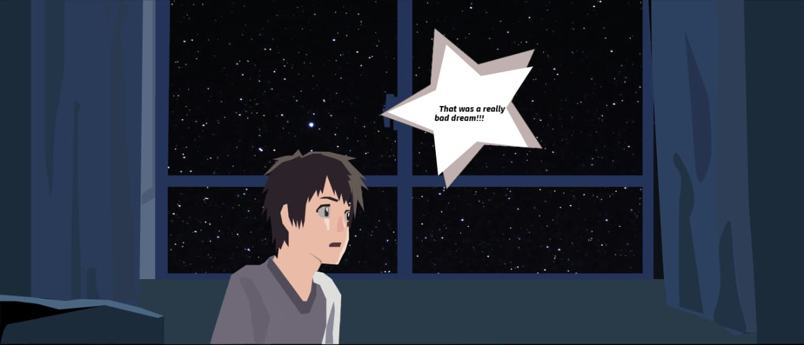
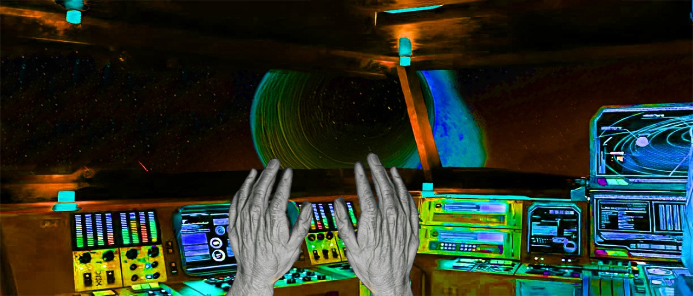
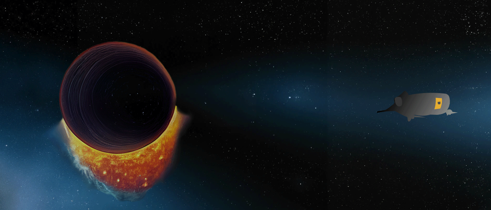
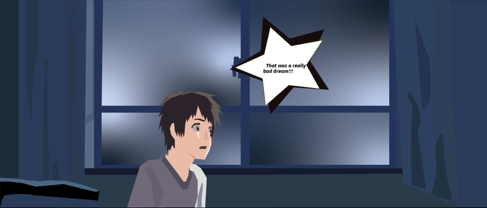

Todd, all of a sudden, wakes up scared. “That was such a bad dream,” he thinks.

He puts on his suit and prepares his rocket to leave for his space mission to Mars.
The rocket takes off from Earth into the vastness of space.

On the way, Todd realizes something is wrong. He can no longer control his rocket!

He sees far off in the distance, an enormous black hole. And as he moves closer to it, time seems to grow faster. He looks at his hands and he’s old!

Todd fears for his life as his rocket gets sucked into the black hole.

Todd, all of a sudden, wakes up scared. “That was such a bad dream,” he thinks

He puts on his suit and prepares his rocket to leave for his space mission to Mars.